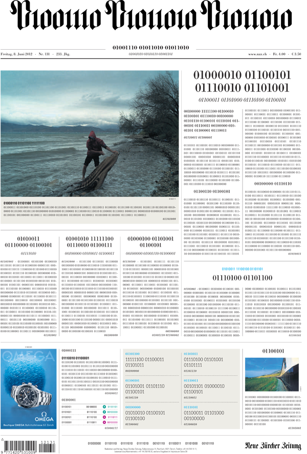
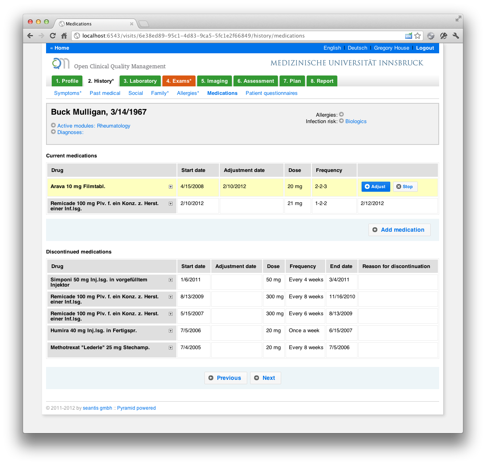
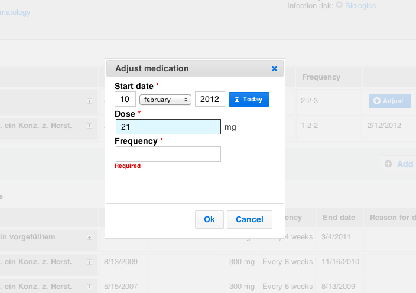
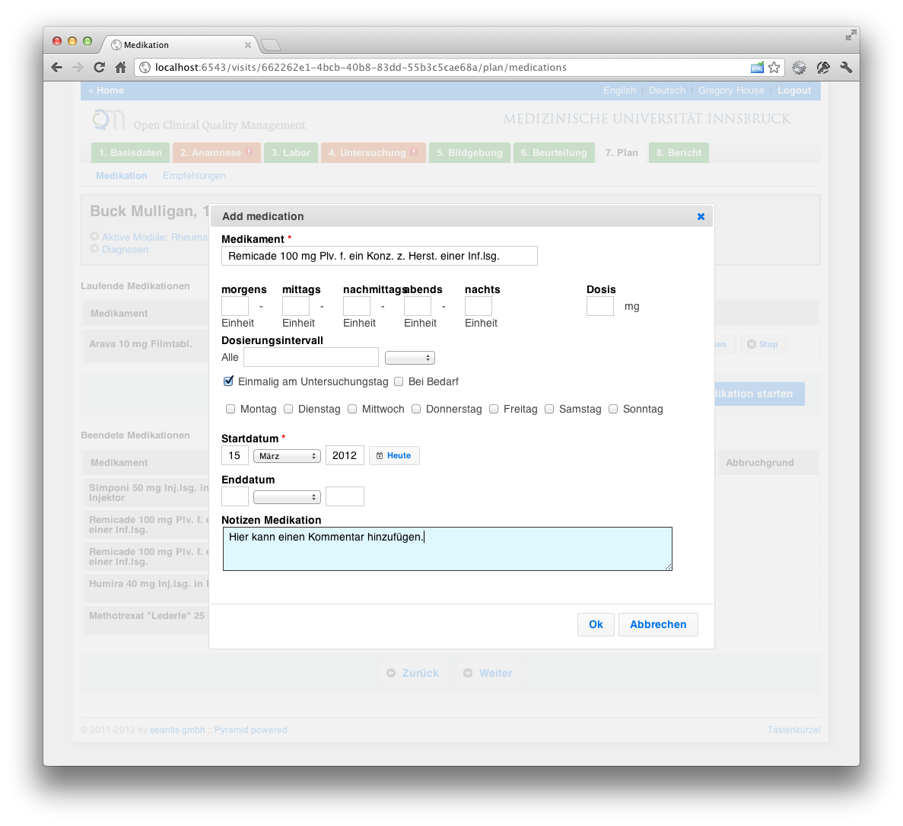
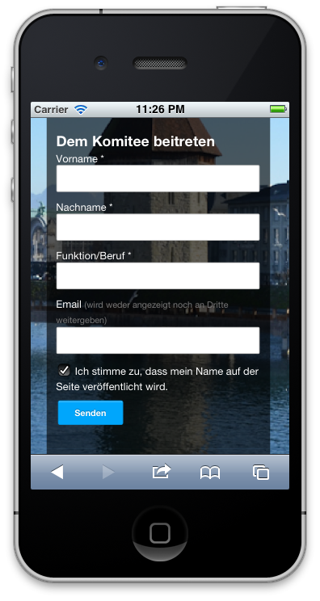
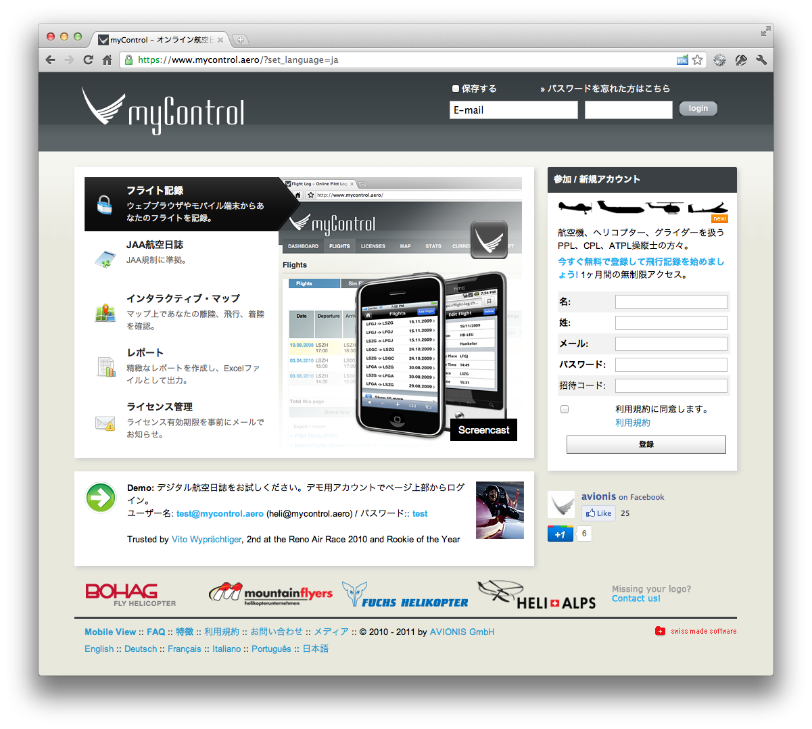
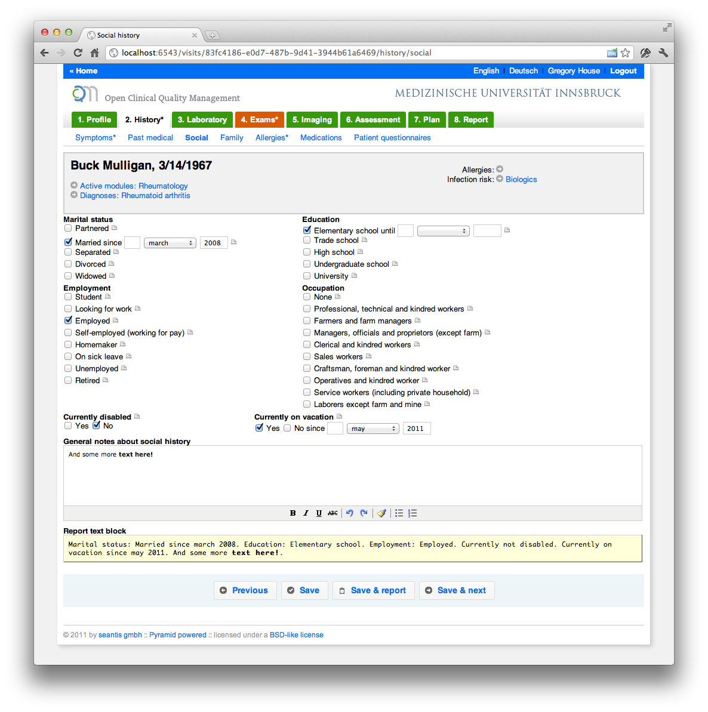

Blog
NZZ in binärer Kodierung

Mutig mutig, alte Tante! Was ich noch nicht ganz verstehe ist die Konvertierung in Binärcode. Müssten es für diese Textlänge nicht viel mehr Zeichen (0,1) sein? Darum bei der per Tweet nachgefragt (https://twitter.com/seantis/status/211755317267152896):
@nzz die binäre Frontseite vom Freitag war grossartig! Welche Konvertierung in Binärcode ist das? Scheinen mir etwas gar wenig Zeichen...
— seantis (@seantis) Juni 10, 2012
Gerade noch einmal selbst darüber nachgedacht. Für jedes Zeichen (Buchstabe, Zahl) werden 8 binäre Stellen gebraucht:
Der NZZ-Schriftzug ist also entsprechend gekürzt:
"01001110 01011010 01011010" heisst "NZZ"
Damit sind alle Artikel sehr stark gekürzt! :-)
Neue Zürcher Zeitung: www.nzz.ch
OCQMS - Medications Form



Learn more about the ideas behind the design of the medications form: http://www.seantis.ch/blog/designing-a-medication-form
Responsive Website
Die Site ist nach dem Konzept des „Responsible Web-Designs“ erstellt. Die Darstellung der Seite passt sich also automatisch der Bildschirmauflösung an. Das Ziel ist eine optimale User Experience auf einer Vielzahl von Endgeräten, insbesondere auch mobile Devices wie Smartphones oder Tablets.
Für das Responsible haben sich seit dem Jahr 2010 [http://www.alistapart.com/articles /responsive-web-design] interessante Ansätze herauskristallisiert. Alle basieren auf einem Flexible Grid und auf Media Query. Interessante Möglichkeiten bieten auch Open Source Frameworks wie z.B. „Foundation“ [http://foundation.zurb.com]. Foundation beinhaltet neben einer Vielzahl anderer Komponenten ein ausgefeiltes Grid- Layout. Die Spalten des Layout passen sich automatisch der Auflösung des Endgerätes an.
Die Seite ist mit dem Pyramid Web Application Development Framework umgesetzt.
myControl.aero auf Japanisch

myControl.aero auf Japanisch: https://www.mycontrol.aero/?set_language=ja
OCQMS - Clinical Documentation
